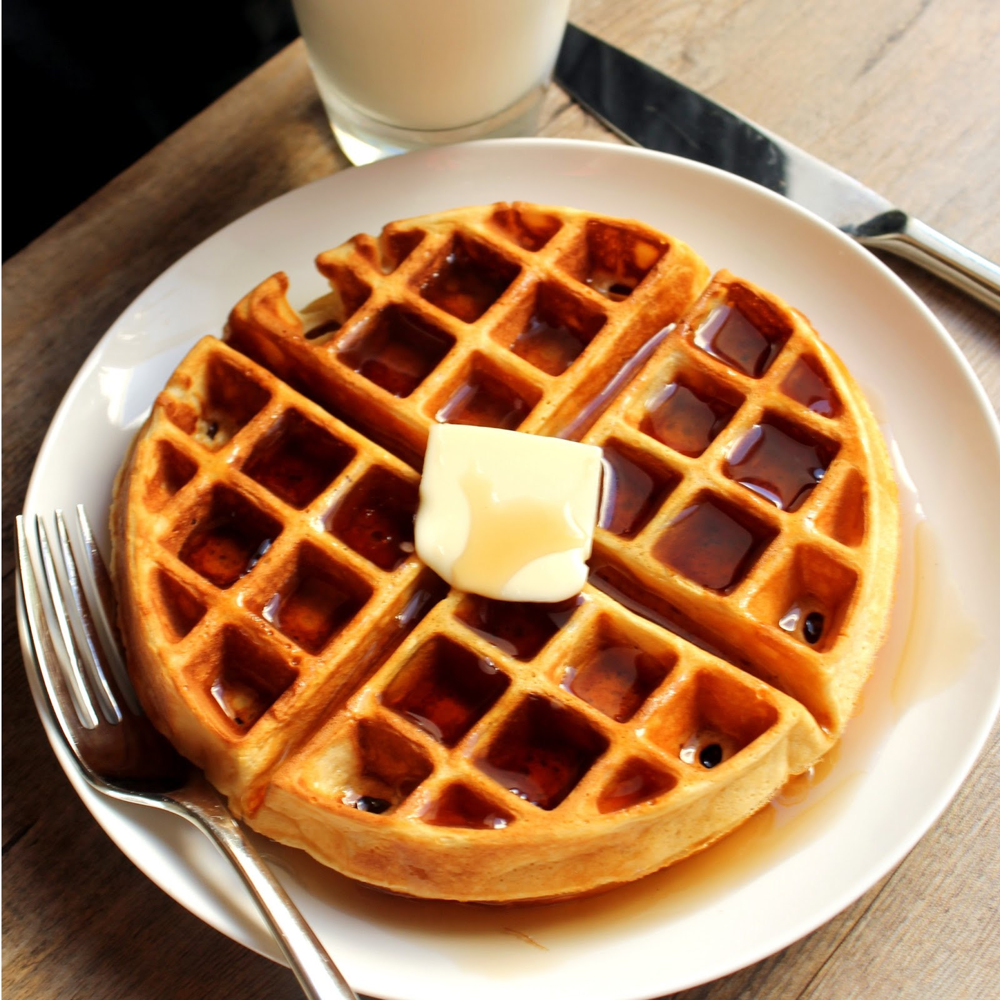

WAFFLE CLASSICO

Ingredientes
- Ovos
- Farinha
- Manteiga
- Mel
Modo de preparo
-
Misture os ovos com a farinha e bata no liquididicador por 15 minutos
-
Misture com a farinha e refogue na manteiga
-
Acrescente o mel
-
Coloque uma pitada de sal
Informacões Adcionais
Sirva quente no café da manha com geleia de morango